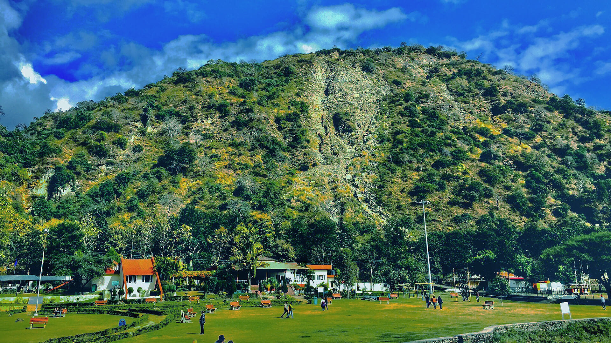
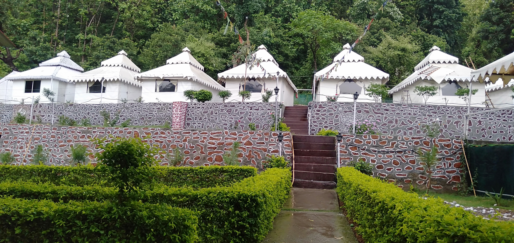
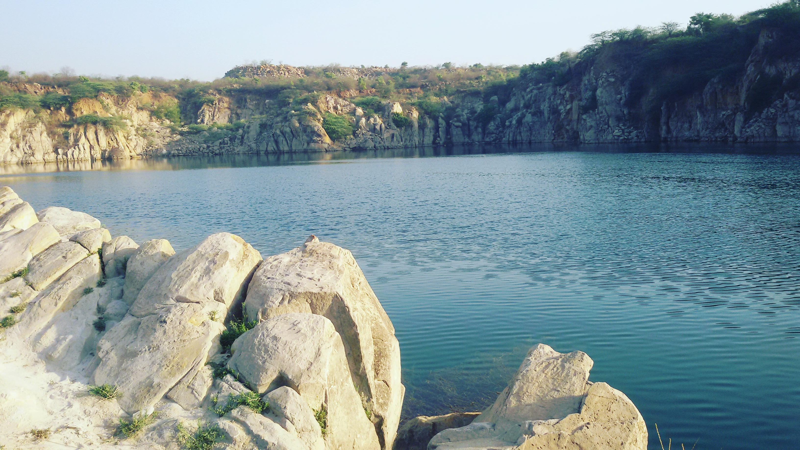
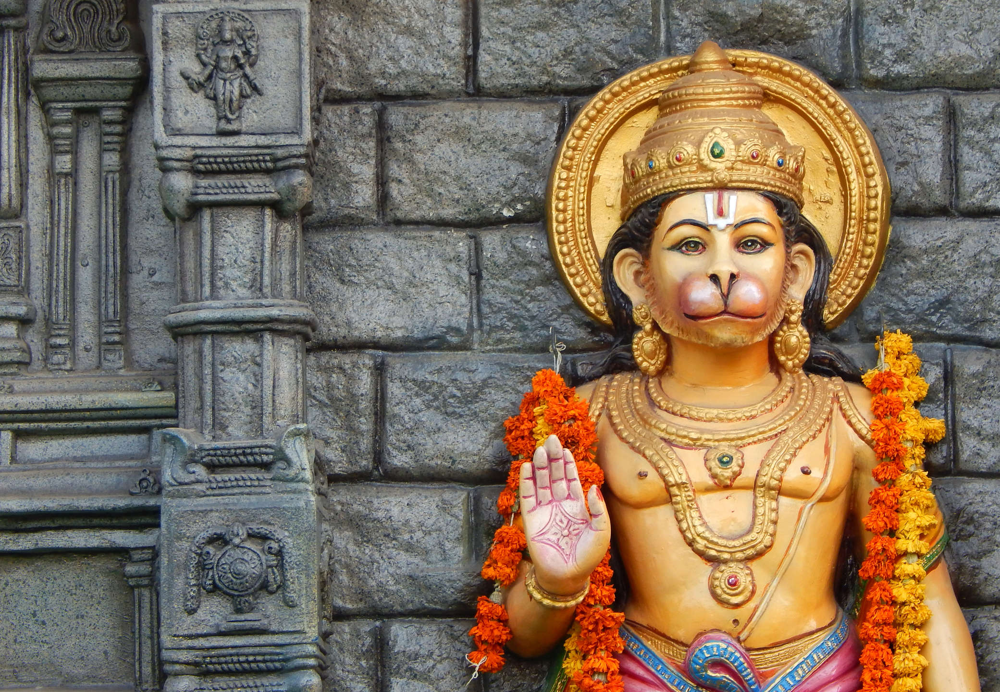
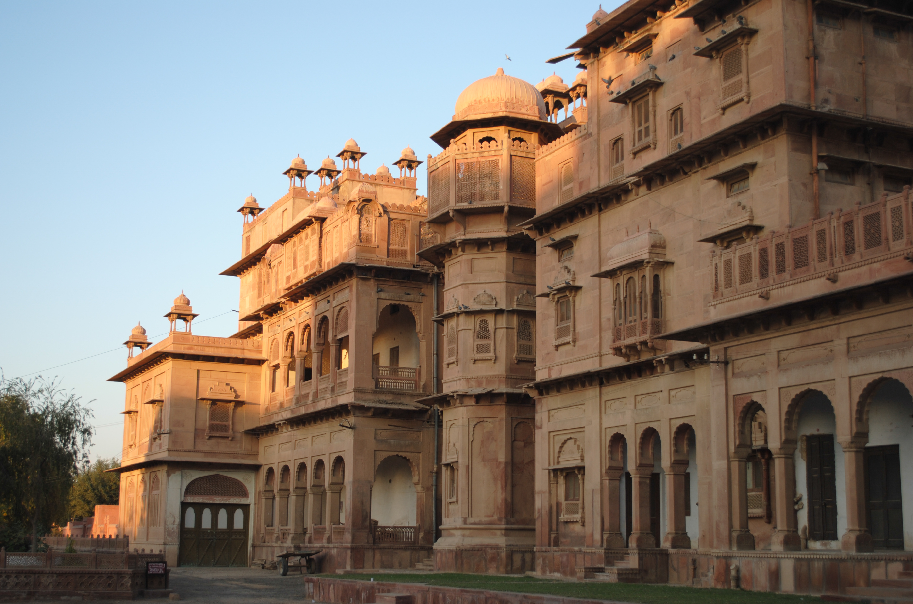
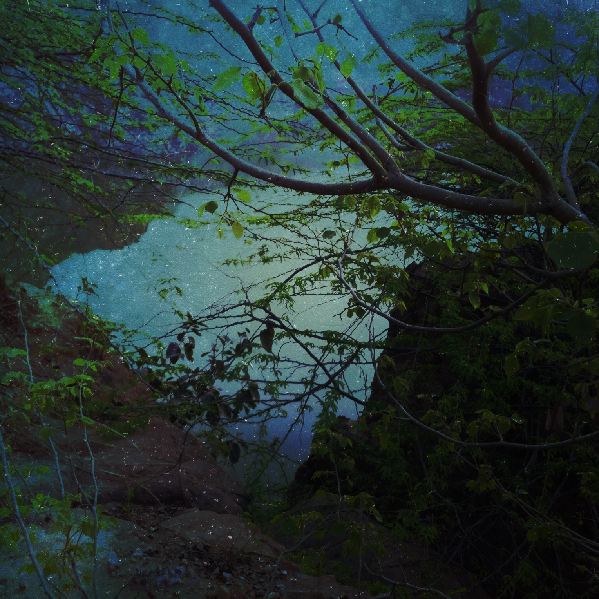
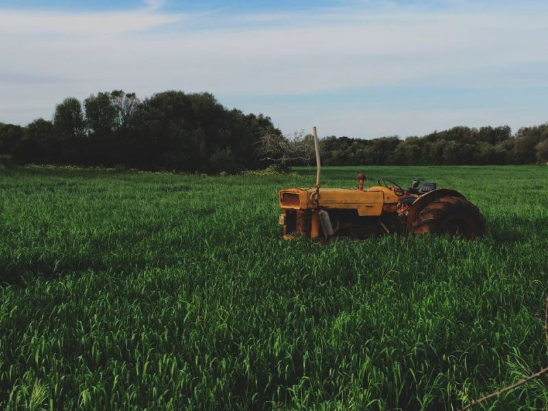

Brahma Sarovar


Brahma Sarovar is an ancient water pool sacred to Hinduism in Thanesar, in the state of Haryana in North India.[1] Hinduism lays emphasis on taking bath for internal and external purity. Most religious sites have water pools or sarovar in or near the Hindu temple and Sikh gurdwara.
According to stories of mythology, Lord Brahma created the universe from the land of Kurukshetra after a huge yajna. The Brahma Sarovar here is believed to be the cradle of civilization. The sarovar is also mentioned in the eleventh century AD memoirs of Al Beruni, called 'Kitab-ul-Hind'.


A sacred shrine dedicated to Lord Shiva stands within the sarovar, accessible by a small bridge. According to scriptures, bathing in this sarovar increases the sanctity of performing the 'ashvamedh yajna'. The pool offers a breath-taking sight during the Gita Jayanti celebrations.
Chhatbir zoo

The zoo was inaugurated on 13 April 1977 by the then governor of Punjab Mahendra Mohan Choudhury and it was christened as Mahendra Chaudhury Zoological Park. Initially the zoo was populated by a small number of animals brought from Guwahati Zoo, Assam and it soon became the largest zoo in Northern punjab India .
Chandigarh, the capital city of Punjab and Haryana, is home to not only some of the most extraordinary architecture marvels along with numerous natural wonders that are well-preserved. From gardens and Natural Reserves to Zoological Parks and serene lakes, the floors of Chandigarh offer one of the finest juxtapositions of concrete jungles and refreshing nature.

One such nature-preserving unit is the Chhatbir Zoo Chandigarh. This Zoological Park not only boasts about being home to the enchanting Royal Bengal Tiger and the mighty Lions along with other reptiles and mammals but is also famed for the walkways surrounded by lush green forests.
Morni Hills

Morni is a village and tourist attraction in the Morni Hills at the height of 1,267 metres (4,157 ft) in the Panchkula district of the Indian state of Haryana. It is located around 45 kilometres (28 mi) from Chandigarh, 35 kilometres (22 mi) from Panchkula city and is known for its Himalayan views, flora, and lakes.
The Morni Hills are offshoots of the Shivalik range of the Himalayas, which run in two parallel ranges. The village of Morni lies on the mountainside, at 1,220 metres (4,000 ft) above mean sea level. Among the spurs of the hills lie two lakes, the larger of these being about 550 metres (1,800 ft) long and 460 metres (1,510 ft) broad.
The Haryana Government has constructed the Mountain Quail Resort for tourists,[1] along with a motorable road to connect the Morni Hills with the Haryana State Highway near Panchkula. Three further roads connect Morni to Chandigarh and other nearby towns.
Surajkund Lake


t is an important biodiversity area within the Northern Aravalli leopard wildlife corridor stretching from Sariska Tiger Reserve to Delhi. Historical place around sanctuary are Badkhal Lake (6 km northeast), Anangpur Dam (16 km north), Damdama Lake, Tughlaqabad Fort and Adilabad ruins (both in Delhi),
Chhatarpur Temple (in Delhi). It is contiguous to the seasonal waterfalls in Pali-Dhuaj-Kot villages of Faridabad,[8] the scared Mangar Bani and the Asola Bhatti Wildlife Sanctuary. There are several dozen lakes formed in the abandoned open pit mines in and around the area.


Surajkund is located near the Surajkund village between the villages of Badarpur and Lakkarpur in Faridabad district of Haryana. The lake's drainage basin is part of the Aravalli hill ranges. It is fed from the north western side by a local nullah (stream) that initially feeds the Anagpur dam on the upstream, this dam was built by Samrat Anangpal Tomar.
Hanuman Mandir

The temple, which has a self manifest idol of Hanuman, has an unusual feature fixed in the spire (Shikhara) in the form of a crescent moon (an Islamic symbol) instead of the Hindu symbol of Aum or Sun that is commonly seen in most Hindu temples. This became particularly important during the Mughal period corroborating this extraordinary depiction.
Historically, Delhi located on the banks of the Yamuna River has been stated to be the Indraprastha city built by Pandavas of the Mahabharata epic period. Pandavas ruled from Indraprastha and Kauravas from Hastinapur (two collateral families) as per a brokered partition of the Kuru empire.

Bhima, while in search of a fragrant flower sought by Draupadi in the forest, found Hanuman lying with his tail blocking his way and, unaware of Hanuman's identity, scornfully asked him to remove his tail. But Hanuman told Bhima to lift the tail since being old he was unable to do it on his own.
Raja Nahar Singh Palace


Today, the walls of Raja Nahar Singh Palace at Ballabgarh vibrate again with the echo of drums and trumpets... With the eager feet of visitors... And the exclaims of delight at the sight of this beautifully maintained palace of the legendary Raja Nahar Singh. Being introduced as a heritage property, the palace dates back to the 18th century AD.
The earliest parts of Raja Nahar Singh's palace were constructed by his ancestor Rao Balram, who came to power in 1739. This construction continued in parts till about 1850. Today, urban centres have come up around the palace. But, the beauty of the palace continues to charm the visitors.


Today the beautiful pavilions and courtyards of Raja Nahar Singh Palace glow once again with royal ambience carefully emphasised by six tastefully decorated guest rooms, restaurant, bar, lounge and public areas, beautified with antiques, relics of a bygone past, stone jallies and intricately carved arches, that take one back to the times of the Raja Nahar Singh.
Panikot Lake

Currently Panikot Lake is one of the best places around Faridabad to go off-roading. Panikot Lake has recently seen a surge in popularity as a destination for bike enthusiasts and free wheelers. Panikot Lake is also an ideal place for a morning walk.
This place can not be found on the map, you need to take an SUV at least of you want to reach and have good driving skills. The locals will guide you to the water body and once you reach there, it's so serene and untouched. It was beautiful, just loved uncovering a lake that was hidden.

Panikot is picturesque place situated in Sirohi Village of Haryana. This is offbeat untouched natural lake made with water disposition from years in Granite Mines. There are no rigid timings to visit Panikot Lake.t was clear summers so the water level was a bit low, but the path towards this was so amazing and a fresh breath of air just made it fade away.
Pratapgarh Farms

If you are looking for something fun then this day out to Pratapgarh farms located on the outskirts of Delhi is the activity for you. This lovely farm offers you so many experiences ranging from the camel ride, wrestling and so many more.
This day out also helps you get insight into the actual activities done at a farm, you can participate in pottery, tend to cows, and learn bout caring for nature. Indulge in trying the scrumptious local cuisine like Bajre ki Khichri, Kadhai Doodh, Neembu Sikhanjee, and many more mouth-watering delicacies throughout the day.


The 8 hours activity, offers you a chance to indulge in the local culture of the place. During the activity, you can also grind grains with the women around or even do creative matka paintings.Along with these, you can also participate in different activities such as tractor rides, badminton, lemon race, and indoor games like tambola and more.